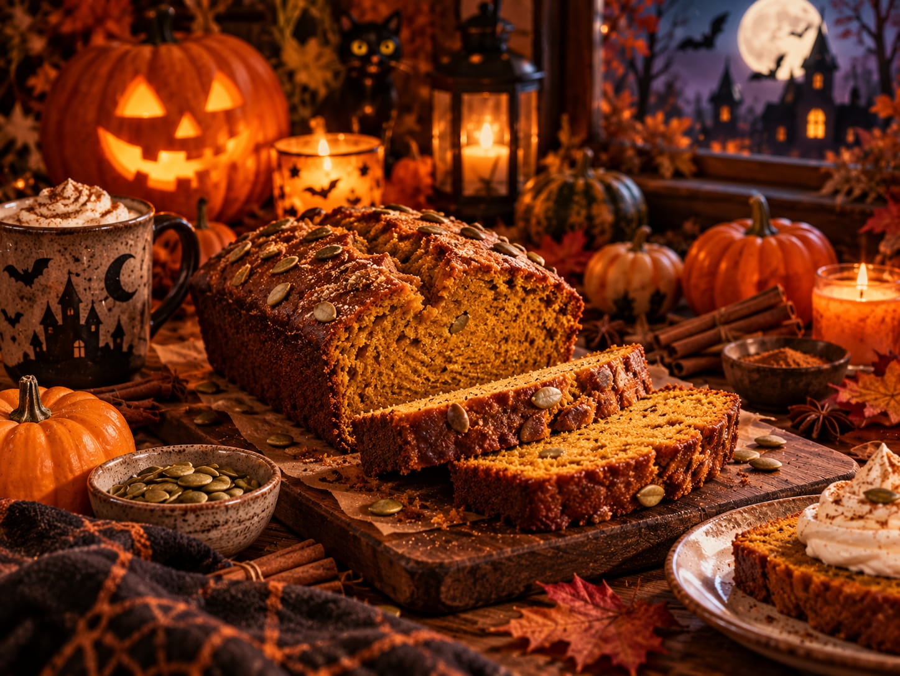

Pumpkin Bread Recipe
Home

Description
This pumpkin pie is cozy, soft, and full of warm autumn flavor.
It has a gentle pumpkin filling, a fragrant blend of spices, and a festive Halloween mood
that makes it perfect for chilly evenings.
Ingredients
- 220 g flour
- 180 g granulated sugar
- 240 g pumpkin puree
- 90 ml vegetable oil
- 30 ml milk
- 1 tsp baking soda
- ½ tsp baking powder
- 1 tsp ground cinnamon
- ½ tsp ground nutmeg
- ¼ tsp ground ginger
- ½ tsp salt
- 1 tsp vanilla extract
Steps:
- Preheat the oven to 175°C.
Lightly grease a metal loaf pan (approximately 23 x 13 cm) or line it with parchment paper.
- In a large bowl, whisk together the flour, baking soda, baking powder, cinnamon, nutmeg,
ginger, and salt.
- In another bowl, whisk the eggs and sugar together. Add the pumpkin puree, vegetable oil,
milk, and vanilla extract. Mix until smooth.
- Gradually add the dry ingredients to the wet ingredients. Stir gently until just combined.
- Pour the batter into the prepared loaf pan and spread it evenly.
- Bake uncovered for 55-65 minutes, until the top is golden brown and a toothpick inserted
into the center comes out clean or with a few moist crumbs.
- Let the bread cool in the pan for 10 minutes, then transfer it to a wire rack. Allow it
to cool completely before slicing.
- Slice and enjoy your homemade pumpkin bread!